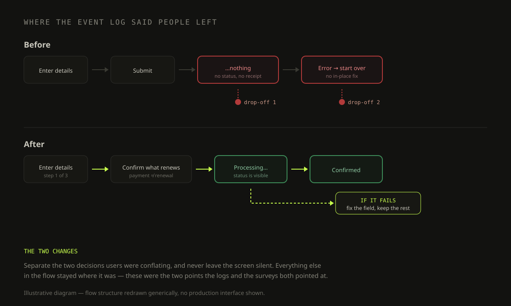

Redesigning Payment and Renewal Experiences
Optimizing User Journeys for Better Conversion Rates and Customer Satisfaction

In 2019, the payment and product renewal processes faced significant challenges, leading to user frustration and decreased retention rates.
By conducting in-depth research and leveraging user insights, I designed and implemented solutions that streamlined workflows, improved usability, and enhanced the overall user experience.
In 2019, users were experiencing confusion and dissatisfaction with the payment and automatic product renewal processes. This led to a poor user experience and potentially impacted customer retention and conversion rates.
- Payment and automatic renewal were experienced as one confusing thing — users could not tell which of the two they were agreeing to.
- The flow reported nothing back: after submitting, nothing on screen said where you were or whether it had worked.
- A failed or mistaken payment had no fix in place. The only route was to start again, and the event logs show that is where people left.
- The satisfaction surveys and the event logs pointed at the same two moments, from opposite directions.
Redesign the payment and automatic renewal processes to improve user clarity, satisfaction, and conversion rates.
- Conduct a comprehensive assessment of user behavior and pain points.
- Design optimized workflows and high-fidelity prototypes.
- Validate the designs through usability testing and implement improvements.
Event log analysis. Conducted to identify behavioral patterns and areas of confusion.
Customer satisfaction surveys. Distributed to gather feedback on the existing processes.
Qualitative interviews. Performed to gain deeper insights into user pain points and needs.
Representative user personas. Created to guide the design process and ensure a user-centered approach.
Design. Designed optimized workflows to simplify the payment and renewal processes, and developed high-fidelity prototypes using Sketch, incorporating user-centered design principles such as system status visibility (ensuring users were always aware of their current status in the process) and error recovery capabilities (providing clear options for users to correct mistakes or cancel actions).
Implementation. Collaborated with development teams to implement the redesigned workflows and interfaces, and monitored user behavior and satisfaction post-launch to ensure the changes had the desired impact.

Renewal rate compared before and after the redesign. The clearer status and recovery options kept subscribers who would previously have dropped out mid-flow.
Measured on the same funnel over the following season.
Usability testing before release and customer feedback after it both reported the flow as clearer — qualitative, not a number.
- System status and error recovery read like textbook heuristics until you open an event log and find the drop-offs sitting exactly where the interface stopped telling people anything.
- The surveys said people were unhappy; the logs said where. Either one on its own would have sent me to the wrong screen.
- Renewals are not a checkout problem. People abandon them for a different reason — not knowing what they already agreed to.